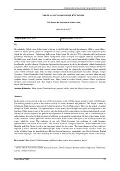

EAO'zbek yozuvchisi Erkin A'zamning hayoti va adabiy faoliyatiga bag'ishlangan ilmiy maqola.
Ushbu ilmiy maqolada taniqli o'zbek yozuvchisi Erkin A'zamning hayoti, ijodiy faoliyati va adabiy shaxsiyati tahlil qilinadi. Adibning hikoya, qissa va romanlaridagi o'ziga xos uslubi, kinoya va ironiya unsurlari hamda jahon adabiyoti an'analari bilan bog'liqligi yoritilgan.